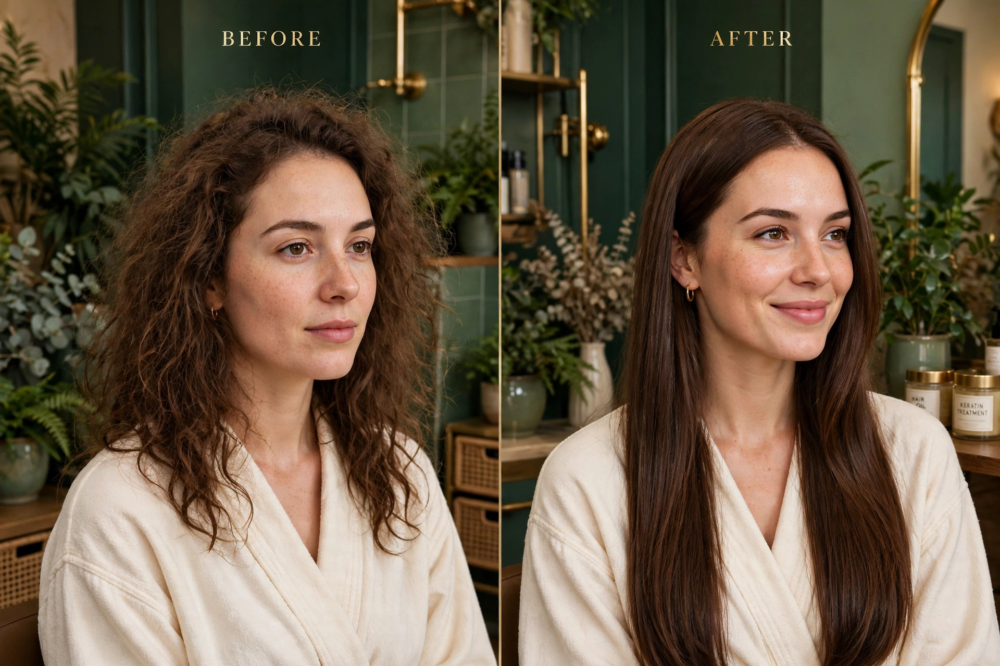

Muestra 01 — Liso espejo
El resultado del alisado orgánico: caída natural y brillo espejo.
Muestra generada con IA — fotos reales del estudio próximamenteContenido & calendario
Una semana completa construida con los temas reales del estudio — detox, retoque, tónicos, antes/después y vitaminas — para que el trabajo de Liliana llegue a más clientas sin pensar cada día qué publicar.
| Día | Tema | Idea de publicación | Formato |
|---|---|---|---|
| Día 1Lunes | Detox capilar | “¿Tu cabello se siente pesado? Empieza la semana con un detox capilar.” La limpieza profunda que prepara el cabello para todo lo demás. |
Foto + texto |
| Día 2Martes | Retoque de raíz | “Tu liso no se pierde, se mantiene.” Cómo el retoque de raíz mantiene el alisado perfecto a medida que crece el cabello. |
Antes / después |
| Día 3Miércoles | Tónicos de romero | “El secreto de la abuela: romero.” El tónico de siempre, aplicado en el cuero cabelludo como parte de la rutina. |
Video corto |
| Día 4Jueves | Antes / después | La transformación de la semana: de cabello ondulado con frizz a liso espejo sin formol. Arrastra y compara. |
Comparador |
| Día 5Viernes | Shot de vitaminas | “Viernes de vitaminas para tu cabello.” Un impulso de nutrición concentrada antes del fin de semana. |
Foto + texto |
| Día 6Sábado | Tónicos de manzanilla | “Sábado suave: manzanilla.” El tónico calmante para el cuero cabelludo sensible y el cuidado del fin de semana. |
Video corto |
| Día 7Domingo | Resultados de la semana | “Esta semana en el estudio.” Un resumen de las transformaciones de la semana y las citas disponibles para la próxima. |
Carrusel |
Calendario de muestra: los temas son los que el estudio ya publica en Facebook. Las fotos de cada día se reemplazan por las transformaciones reales de la semana.
Muestras de transformación generadas con IA
Tres muestras en el estilo del estudio: liso espejo, brillo natural y el antes/después que es la firma de Liso Francés. Son ejemplos generados con IA — las fotos reales del estudio las reemplazan cuando el motor arranca.
El resultado del alisado orgánico: caída natural y brillo espejo.
Muestra generada con IA — fotos reales del estudio próximamente
La luz sobre el cabello liso: el brillo que se nota sin filtros.
Muestra generada con IA — fotos reales del estudio próximamente
La publicación que más vende: la transformación completa, lado a lado.
Muestra generada con IA — fotos reales del estudio próximamente¿Cómo funciona el motor de contenido?
El estudio ya hace el trabajo difícil: las transformaciones. El motor se encarga de que cada una llegue a Facebook en el momento justo.
01
Cada cita deja un antes y un después. Esas fotos reales son el corazón de todo el contenido.
02
El calendario rota tus temas — detox, retoque, tónicos, vitaminas — para que nunca se repita lo mismo dos días seguidos.
03
Cada publicación lleva a la reserva por Messenger: la clienta ve el resultado y agenda en el mismo mensaje.